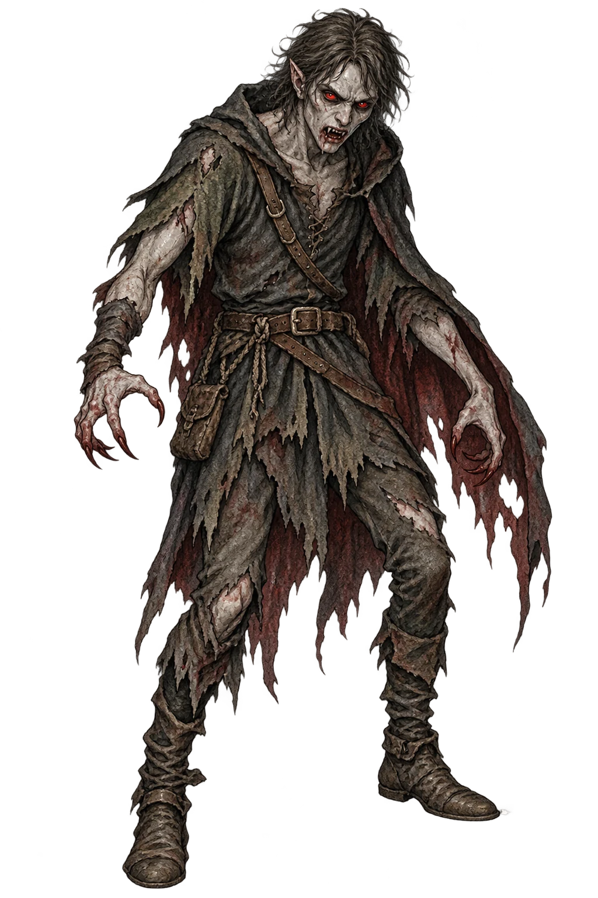
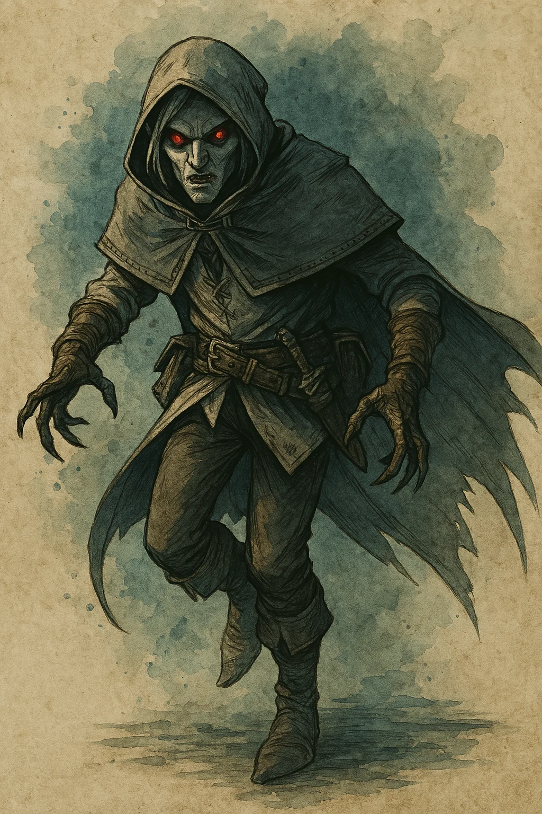
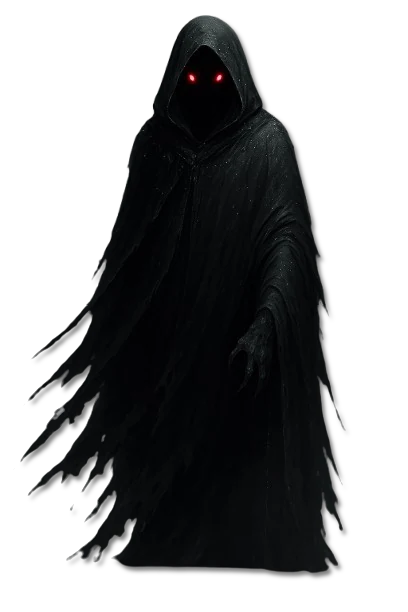
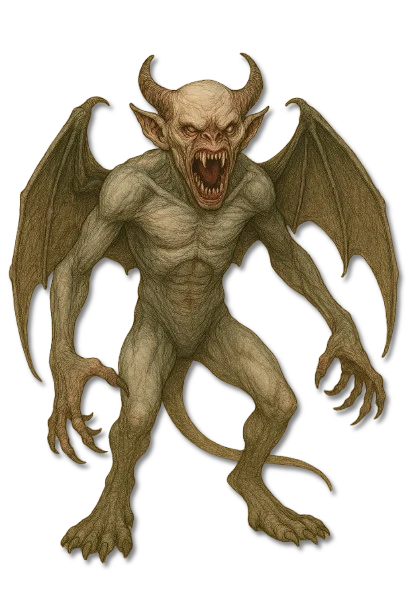
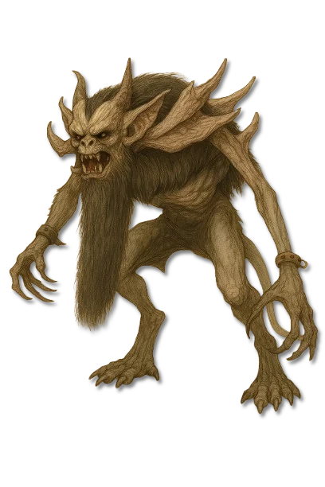

???
???
Noch keine gesicherte Überlieferung.

SprossarchivAleria · Im Schatten höherer Vampire · Archivblatt IV / 03-B
Niedere, durch vampirische Infektion entstandene Sprossformen
Blutsauger sind keine unmittelbaren Schöpfungen Bhaals, sondern durch vampirische Infektion veränderte Sterbliche. Die Gattung des übertragenden Vampirs bestimmt Virus, Wandlungsdauer und Fähigkeiten des Sprosses. Zwischen Resten menschlicher Erinnerung und raubtierhafter Blutgier dienen sie höheren Vampiren als Werkzeuge, Wächter oder unberechenbare Jäger.

„Ein Blutsauger trägt noch den Namen seines früheren Lebens, doch in seinem Blut spricht bereits die Gattung des Wesens, das ihn erschuf.“Grundsatz aus dem Archiv der vampirischen Infektionen
Sechs Merkmale · Skala 1–10
Die gemeinsame Bewertung beschreibt den unvollkommenen Vampirismus der Sprosse. Einzelne Linien weichen stark voneinander ab, weil das übertragende Virus ihre Gestalt und ihr Denken bestimmt.
Quelle der Einordnung: Aus Infektionsweg, Blutdurst, verbliebener Menschlichkeit, körperlicher Umgestaltung, Bindung an den Schöpfer und den überlieferten Gegenmitteln abgeleitet
Infizierte Linien
Vier gattungsspezifische Sprosse sind namentlich überliefert und besitzen eigene Dossiers. Eine weitere Stelle der alten Artenübersicht bleibt als ??? unausgefüllt.

Infizierter Vampirspross der Mula
Mulinar entstehen durch den Sanguinaris Serenatis einer Mula.
Gesellschaftlich getarnter Vampirspross des Alp
Alpyr entstehen durch den schleichenden Sanguinaris Mendax eines Alp.

Monströser Vampirspross des Nosferat
Nosphyre entstehen durch den aggressiven Sanguinaris Umbra eines Nosferat.

Verfallsgezeichneter Vampirspross des Nachzehrers
Mortis entstehen durch den degenerativen Sanguinaris Putrescens eines Nachzehrers.
???
Noch keine gesicherte Überlieferung.
Blutsauger bilden eine niedere und unter reinen Vampiren häufig verachtete Gattung. Sie entstehen nicht unmittelbar durch Bhaals Willen, sondern wenn ein Vampirismus durch Biss, Blut, Speichel oder Verletzung auf einen Sterblichen übergeht.
Die Verwandlung schafft weder einen vollständig lebenden Menschen noch einen wahren Vampir. Der Wirt bleibt sterblich, gewinnt jedoch vampirische Merkmale und einen Hunger, der die erhaltene Persönlichkeit immer weiter verdrängt.
Eine Infektion beginnt, wenn ein Opfer nicht ausgelöscht, sondern mit dem Erreger eines höheren Vampirs zurückgelassen wird. Qualen, Wahn und körperliche Veränderungen folgen innerhalb von Stunden, Tagen oder Monaten, abhängig von der übertragenden Gattung.
Der genaue Zustand bleibt deshalb uneinheitlich. Manche Sprosse bewahren Sprache, Planung und eine menschliche Fassade; andere verlieren innerhalb weniger Tage jede Erinnerung und werden zu geflügelten Jagdbestien oder wandelnden Trägern des Verfalls.
Die bekannten Erreger heißen Sanguinaris Serenatis, Mendax, Umbra und Putrescens. Jeder verändert den Wirt auf eigene Weise, bindet ihn aber an die Linie seiner Schöpferin oder seines Schöpfers und trägt Bhaals Verderbnis weiter.
Höhere Vampire nutzen Blutsauger als Werkzeuge, Diener oder Wächter, gewähren ihnen aber kaum Ansehen. Ein Spross trägt nur Fragmente der Macht seines Ursprungs und bleibt innerhalb der Hierarchie von dessen Schutz und Befehlen abhängig.
Unter Lebenden sind Blutsauger dennoch gefährlich, weil sie häufig unberechenbarer als ihre Schöpfer handeln und durch weitere Infektionen neue Ausbrüche verursachen können.
Blutsauger sind sterblich und können durch schwere Verwundung, Zerstörung des Herzens oder Enthauptung getötet werden. Feuer, geweihte Waffen, heiliges Wasser und sakrale Magie wirken gegen den unvollkommenen Fluch besonders stark.
Eine Heilung ist wesentlich schwieriger als eine Tötung. Nur außergewöhnliche göttliche oder naturmagische Kräfte können den tief verankerten Erreger entfernen, und mit fortschreitender Wandlung sinkt die Aussicht, den früheren Menschen zu bewahren.
Vor einer Konfrontation muss die Sprosslinie bestimmt werden: Ein Alpyr verlangt Enttarnung, ein Mulinar Schutz vor Lockmagie, ein Nosphyr geschlossene Abwehr und ein Mortis Abstand zu seiner Verfallsaura.